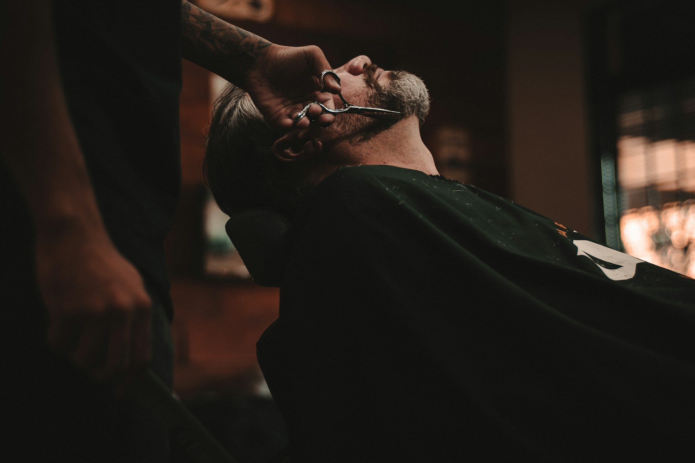
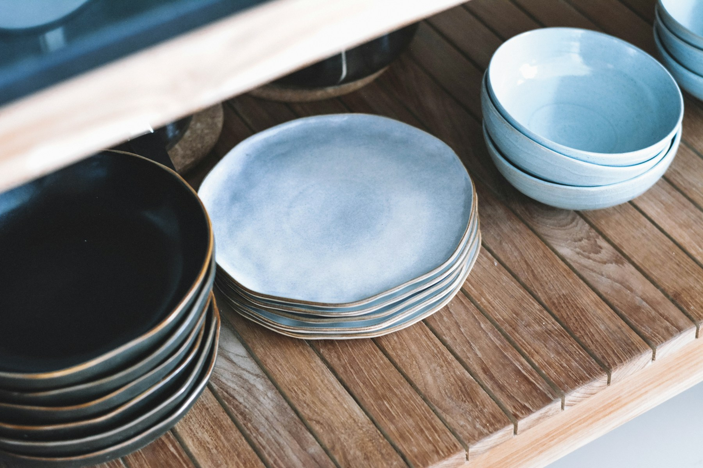

Seven businesses. Seven points of view.
Independent
by design.
Seven businesses. Seven different worlds. A collection of considered digital experiences, each with a character of its own.
A new beginning.
Give it a next step.
01 / Service workflow
Relay / Local ↗
A brighter path for the call you couldn’t catch.
Fewer loose ends.
02 / Manual prototype
Missed-Call Pilot ↗
A seven-day field test. Intentionally human.
 Polished Mile
Polished Mile03 / Auto detailing
Polished Mile ↗
Considered care for the love of the drive.

Northline Studio04 / Barbershop
Northline Studio ↗
Good company. Sharp work.
 Fieldmark Build Co.
Fieldmark Build Co.05 / Construction
Fieldmark Build Co. ↗
Good spaces begin with good foundations.

Common Thread Goods06 / Independent retail
Common Thread Goods ↗
Useful, beautiful, well-loved things.
 Cedar & Stone
Cedar & Stone07 / Landscaping
Cedar & Stone ↗
A little more life, outside.
Custom HTML, CSS, and JavaScript. No Wix scripts, dependencies, or hosting.
These are presentation prototypes. Business names and imagery represent fictional concepts; inquiry flows are interactive previews, with no live submission or booking.